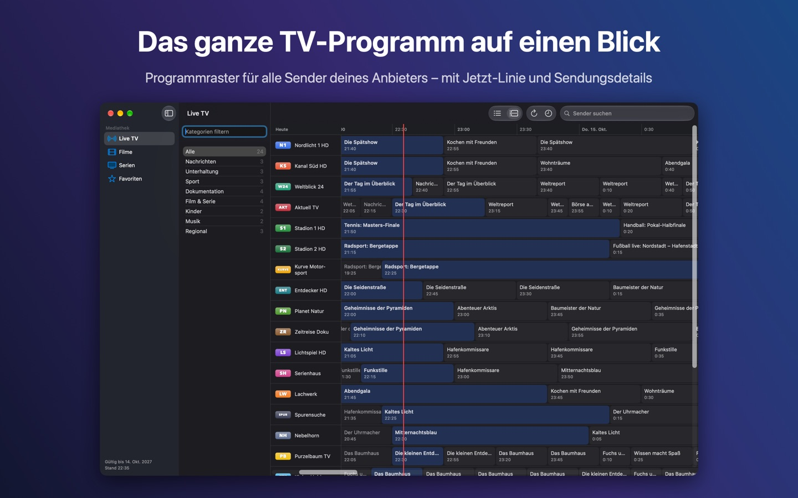
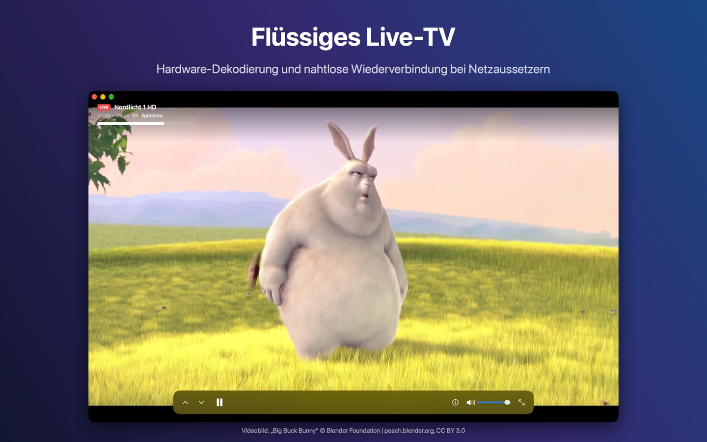
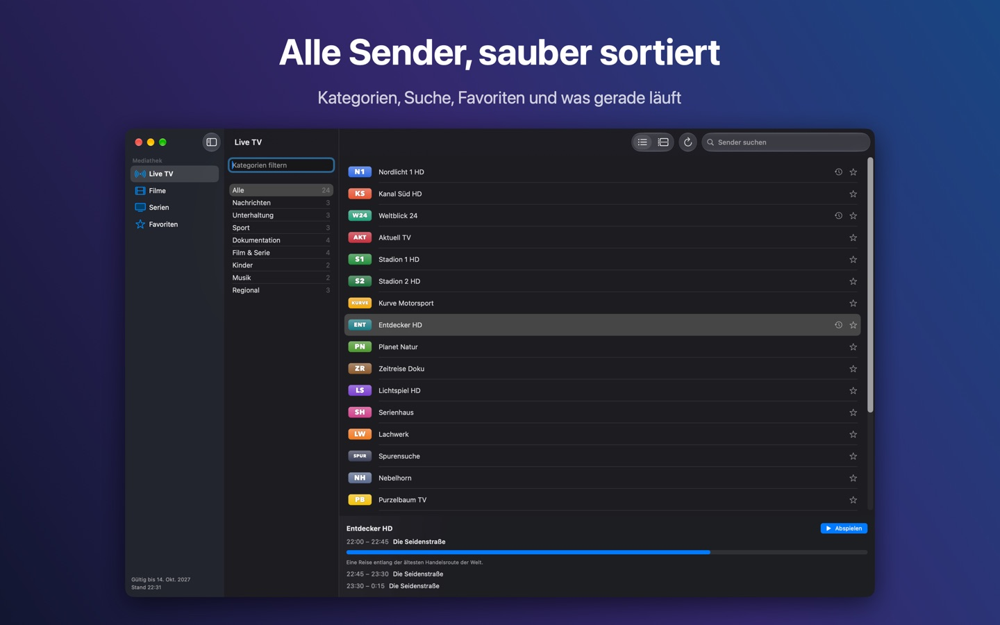
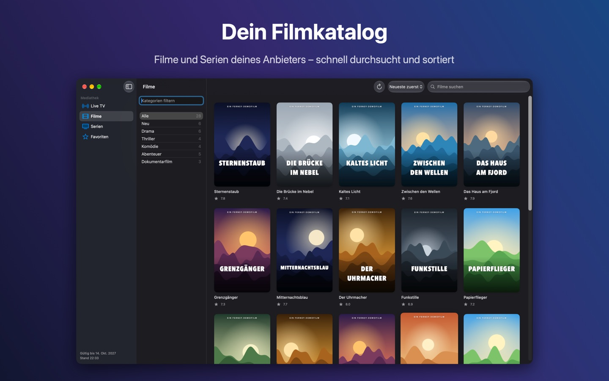
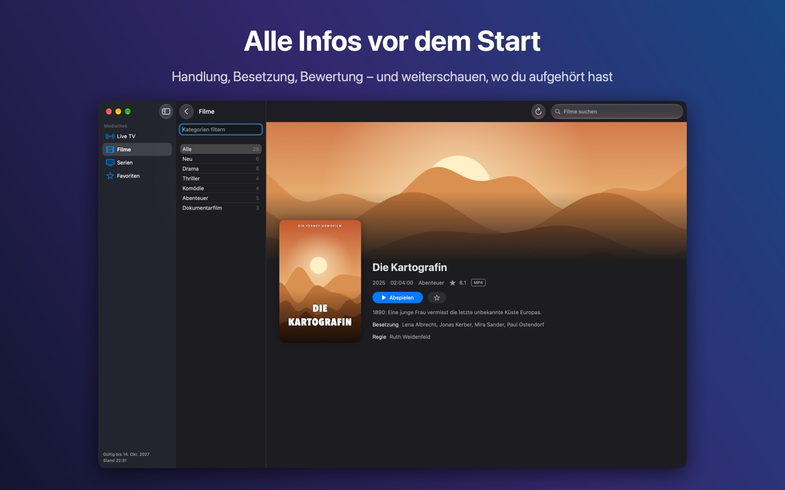
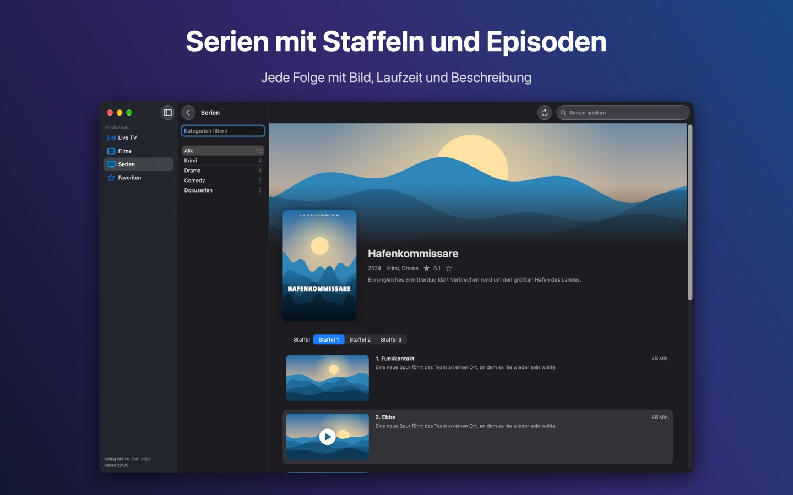

Live-TV mit Programmraster, Filme und Serien – schnell, nativ und ohne Werbung. Für Xtream-Codes-Zugänge.
Bald im Mac App StoreFür Mac mit Apple-Chip · macOS 27 oder neuer






Fernsy erfasst keine Daten. Deine Zugangsdaten liegen im Schlüsselbund deines Macs, und die App verbindet sich nur mit deinem Anbieter.